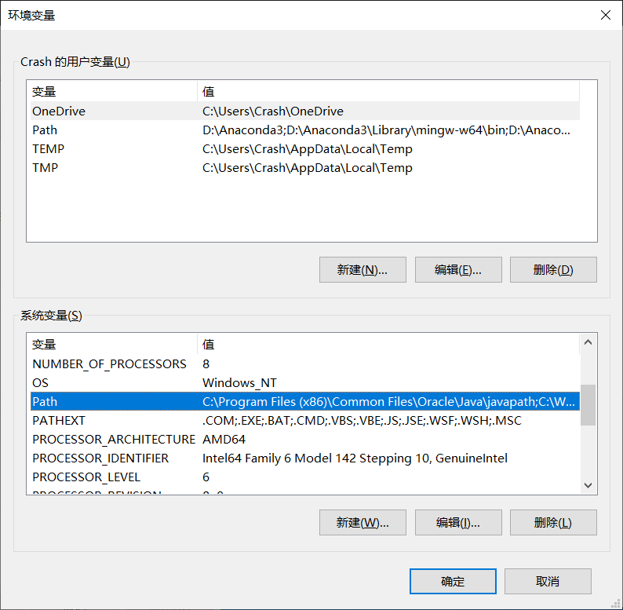

FFmpeg使用
安装
- 下载：
https://www.ffmpeg.org/download.html https://ffmpeg.zeranoe.com/builds/
- 配置
此电脑->属性->高级系统设置->环境变量->系统变量Path->添加bin目录

格式转换
ffmpeg -i [input filename] [output filename]
提取音频
ffmpeg -i [input] -acodec copy -vn [output].aac
(-vn：不处理视频)
提取视频
ffmpeg -i [input] -vcodec copy -an [output]
(-an：不处理音频)
合并视频音频
取消音轨：
ffmpeg -i [video filepath] -vcodec copy -an [new filename]
添加音频：
ffmpeg -i [new filename] -i [audio filepath] [final filename]
视频剪辑
ffmpeg -ss [hh:mm:ss] -t [hh:mm:ss] -accurate_seek -i [input] -codec copy -avoid_negative_ts 1 [output]
-ss：开始剪辑时间 -t：需要剪辑时长
视频合并
ffmpeg -f concat -i [txt] -c copy [output]
txt文本：
file '[input1]'
file '[input2]'
......
bug:
txt文件名首字母需要与input文件名首字母一致，且需要在'[input]'中去除首字母
出现Unsafe file name：
ffmpeg -f concat -safe 0 -i [txt] -c copy [output]
提取图片
全部提取：
ffmpeg -i [input] -r [number] -q:v 2 -f image2 [filename]%03d.jpg
-r：每秒帧数 -q:v：图片质量，2为高质量
限时提取：
ffmpeg -i [input] (-ss [hh:mm:ss] -t [number]) -r [number] -q:v [number] -f image2 pic-%03d.jpg
合并图片
一键合并：
ffmpeg -y -r [Frame] -i [input]%d.[Format] -vcodec libx264 [output]
使用txt合并：
ffmpeg -f concat -safe 0 -i [txt] -vsync vfr -pix_fmt yuv420p [output]
txt文件：
file '[path_1]'
duration [time]
......
file '[path_n]'
duration [time]
file '[path_n]'
添加水印
ffmpeg -i [input] -i [logo path] -filter_complex overlay=[x:y] output.mp4
水印位置：
x -> main_w：视频宽度
overlay_w：水印宽度
y -> main_h：视频高度
overlay_h：水印高度